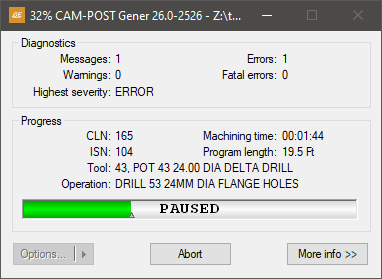

Starting GENER
This section explains how to start GENER (optionally with Virtual Machine) from one of the assorted Manufacturing Extractor utilities, or from the desktop, or from the Windows command prompt.
Starting GENER from an Extractor
ICAM has developed Manufacturing Extractors that are used to quickly and automatically extract from the CAM system all of the information necessary to perform a complete post-processing and simulation of an NC program. The information extracted includes:
Tools and their holders
Tool length and tool diameter compensation amounts
Workpiece compensation amounts
One or more finished parts, raw stock and fixtures
Manufacturing Extractors must be run from within the CAM system. Information on how to do so can be found in the Interface Kits on-line help, available from the “ICAM V26 x64” Start menu “Kit Help” entry. As this document went to press, Manufacturing Extractors were available for:
3DEXPERIENCE 2015x–2025x
CATIA V5R21, V5-6R2012–2025
Cimatron 2025
Creo 7-11
FeatureCAM 2017–2025
Fusion 360 2021-2025
GibbsCAM 2024–2026
Mastercam 2019–2025
NX12, 1847, 1872, 1899, 1926, 1953, 1980, 2007, 2206-2412
PowerMill 2021–2025
Information on installation, execution and use of each of the Manufacturing extractors can be found in the Interface Kits on-line help. The extractors work by creating “job files” for both Icam Post GENER and Control Emulator CERUN. When GENER (or CERUN) is subsequently run, the job file can be selected to start post-processing with the CAM system environment duplicated and ready for simulation (see “The Launch Panel”).
Starting GENER from the Desktop
GENER may be started either from the Start menu or from the ICAM Portal.
To start GENER from the Start menu, first locate the “ICAM V26 x64” Start menu, then select “Gener V26”. To start GENER from the portal, select the Products pane and click on the “ICAM Icam Post NC post-processor” tile or icon. The GENER launch panel will appear (see “The Launch Panel”).
You may also drag-and-drop a CL file onto a running portal application or the portal desktop icon. This will start the GENER launch panel (see “The Launch Panel”) with the dropped file selected for input to the post-processor. Drag a “cpj” file (see “Job Files”) to start the GENER launch panel with the settings from a previously saved job. Drag a “zrj” file (see “Review Files”) to start the GENER launch panel in preparation to review the results of a previously run program.
Starting GENER from a Command Prompt
GENER can be executed from the Windows command prompt by first setting the current working directory to the Icam Post V26 installation directory (i.e., C:\Program Files\ICAM\V26) and then typing the following command:
\(\textbf{gener } \; \mathit{file}\textnormal{-}\mathit{name} \;\; \mathit{qualifiers}\)
The gener command starts GENER using an interactive launch panel (see “The Launch Panel” for details). The launch panel simplifies the selection of GENER processing options. It can be suppressed by coding the /quiet command line option.
file-name
Only one CL file name can be specified. If a file type for the file name is not specified, a default will be used based on the input file format. For APT-like input CL files the default file type is apt. For regular binary input files the default is cld. For ISO input files the default is iso. The input file type can be specified with the /format command line option or the input_format symbol in the ICAM.DEF definition file. The default input file format is APT-like source CL.
qualifiers
The command line qualifiers are keyword value pairs separated by an = (equal sign). The qualifier keywords must be preceded with a / (forward slash). The following is an alphabetical list of the supported qualifiers and their usage:
\(\textbf{/back}\)
This qualifier should be used when running GENER as a background process. This qualifier inhibits writing and prompting to and from the console, as well as the display of the GENER interface and dialogs. When running in background mode, dialog and console I/O operations will fail with a macro I/O error. A $BACK logical system variable can be tested inside macros to see if user interaction is available.
The background GENER processing status is available through a tile that will appear in the Progress panel of the Portal. If the portal is not running, then the status will appear as a small progress icon in the system tray on the taskbar. You can right-mouse-button on the tile or icon to either open the full interface or abort the process.
\(\textbf{/dbf}\mathtt{=}\mathit{file}\textnormal{-}\mathit{name}\)
Specifies the database file name. By default, the database is named campost.dbf and resides in the work subdirectory of the icam_appdata directory (see “Configuration Storage and Application Data”). The icam_dbf environment variable can also be used to define the database.
\(\textbf{/def}\mathtt{=}\mathit{file}\textnormal{-}\mathit{name}\)
Specifies which definition file to use. By default, the definition file is named ICAM.DEF and resides in the icam_appdata directory. If a directory path is not specified with the file name, then GENER will search for the file as described here.
\(\textbf{/ef}\mathtt{=}\mathit{file}\textnormal{-}\mathit{name}\)
Specifies that a log file is required. If a file name is not specified, a file having the same name as the CL file with a file type of log is created. The log file contains the same information as the first page of the listing file (identifying the software version, input data, output data, interface kit and licensing) as well as the same summary sections found in the listing file.
\(\textbf{/format}\mathtt{=}\mathit{input}\textnormal{-}\mathit{file}\textnormal{-}\mathit{format}\)
Specifies the format of the input CL file. The format must be one of the following:
- AI:
APT-like output following AI conventions
- APT:
APT-like CAM system output file
- CADRA:
APT-like output file from SofTech CADRA NC
- CATIA:
Aptsource CL file from CATIA
- CDC:
APT-like output file from CDC
- DUCT5:
Numeric CL file from DELCAM
- ESPRIT:
APT-like output file from ESPRIT
- EXAPT:
APT-like output file from Systemtechnik GmbH
- EUCLID:
APT-like output file from EUCLID
- HYPERMILL:
POF file from OPEN MIND hyperMILL
- IBMB:
Binary CL file from IBM
- IBME:
Binary CL file from IBM
- ICAM:
ICAM binary CL file (default)
- ISO:
ISO 3592 source CL file
- MCAM:
NCI file from Mastercam
- NCLCAM:
Binary CL file from NCL
- NX:
APT-like output file from NX
- PTC:
APT-like output file from Creo
This qualifier will override the input_format symbol in the symbol definition file.
\(\begin{array}{l} \rule{0pt}{2.5ex} \textbf{/insert}\mathtt{=}\mathit{file}\textnormal{-}\mathit{name} \\ \rule{0pt}{2.5ex} \textbf{/noinsert} \end{array}\)
Controls whether an alternate APT-like source file should be processed before the main APT input file. This qualifier is only valid with the APT-like input format methods. Specifies the name of an alternate insert file; /noinsert disables the use of an insert file. This qualifier will override the insert symbol in the symbol definition file.
\(\textbf{/job}\mathtt{=}\mathit{file}\textnormal{-}\mathit{name}\)
Specifies the name of a job file containing command line parameters and qualifiers that have been either saved from a previous post-processing or control emulation job or that have been created by an ICAM Manufacturing Extractor. This qualifier can also be used to specify a review file containing results saved from a previous post-processing or control emulation job.
\(\textbf{/kit}\big[\mathtt{=}\mathit{name}\,\big]\)
Specifies the name of a CAM interface kit to use, or the keyword “automatic” to have GENER select an appropriate interface kit based on the input CL file type and content.
Each CAM interface is self contained in a separate directory. All standard interfaces can be found in the kit subdirectory below the installation directory. User customized interface kits can be created in the kit subdirectory below the icam_appdata directory. The value specified for the kit qualifier must either match one of the subdirectory names of the kit directories, or match one of the kit_aliases definitions in a kit ICAM.DEF file. The application data kit subdirectory is searched first for a matching kit name, before searching the installation kit subdirectory.
Each kit must contain an ICAM.DEF file defining the configuration details that are necessary for that specific CAM system format (see the “CAD/CAM System Interfaces” annex for interface kit details). Kit DEF file symbols take precedence over (i.e., override) those in the regular ICAM.DEF file.
Automatic interface kit selection uses special kit_clfile and kit_cltext definitions in the ICAM.DEF file in each interface kit to assist the post-processor in selecting the appropriate interface kit based on the input CL file. If two or more kits are valid candidates, then GENER will prompt for the appropriate kit, or if prompting is not possible, will abort execution with a diagnostic message.
This qualifier will override the interface_kit symbol if specified in the ICAM.DEF file. Specify it without a name to run without an interface kit, regardless of the interface_kit symbol setting.
\(\begin{array}{l} \rule{0pt}{2.5ex} \textbf{/list}\mathtt{=}\mathit{file}\textnormal{-}\mathit{name} \\ \rule{0pt}{2.5ex} \textbf{/nolist} \end{array}\)
Specifies the post-processor verification listing file. By default, the listing is written to a file having the same name as the CL file with a file type of lst or htm depending on the output format. /nolist disables the generation of a listing file. If the listing is disabled, a log file (see the /ef qualifier above) will be generated.
\(\textbf{/ma}\big[\mathtt{=}\mathit{file}\textnormal{-}\mathit{name}\,\big]\)
Specifies file names (“after” macro libraries) containing user-defined macros to be matched after regular post-processor macros. The named file must contain either source user-defined macros separated by ENDMAC commands, or QUEST precompiled macro object code (.obj). Multiple occurrences of this qualifier can be specified on the command line to specify more than one macro file, in which case macro matching follows the same order as the macro files defined.
This qualifier will override the madef symbol if specified in the ICAM.DEF file. Specify it without a file-name to run without “after” macros, regardless of the madef symbol setting.
\(\textbf{/mb}\big[\mathtt{=}\mathit{file}\textnormal{-}\mathit{name}\,\big]\)
Specifies file names (“before” macro libraries) containing user-defined macros to be matched before regular post-processor macros. The named file must contain either source user-defined macros separated by ENDMAC commands, or QUEST precompiled macro object code (.obj). Multiple occurrences of this qualifier can be specified on the command line to specify more than one macro file, in which case macro matching follows the same order as the macro files defined.
This qualifier will override the mbdef symbol if specified in the ICAM.DEF file. Specify it without a file-name to run without “before” macros, regardless of the mbdef symbol setting.
\(\textbf{/mdldbf}\mathtt{=}\mathit{file}\textnormal{-}\mathit{name}\)
Specifies the database file name that contains the Virtual Machine model definition. If this qualifier is not specified, the model will be read from the same database as the post-processor. This qualifier is only valid with a Virtual Machine (vmr260) license.
\(\begin{array}{l} \rule{0pt}{2.5ex} \textbf{/model}\mathtt{=}\mathit{model}\textnormal{-}\mathit{name} \\ \rule{0pt}{2.5ex} \textbf{/nomodel} \hspace{2in} {\small \textnormal{(default)}} \end{array}\)
Specifies the name of the Virtual Machine model to be used during post-processing. Model naming conventions are the same as post-processor naming conventions (see the /post qualifier description below). If the model name is omitted, the default model associated with the post-processor (if any) will be used. Specify /nomodel to inhibit Virtual Machine processing. This qualifier is only valid with a Virtual Machine (vmr260) license.
\(\begin{array}{l} \rule{0pt}{2.5ex} \textbf{/mrs} \\ \rule{0pt}{2.5ex} \textbf{/nomrs} \hspace{2.2in} {\small \textnormal{(default)}} \end{array}\)
Enables or disables the use of MRS (material removal simulation) during post-processing. MRS requires an xmr260 license option. MRS can be used by itself to simulate just the cutting actions of the tool vs. stock, or it can be used with a Virtual Machine model for a complete simulation.
\(\textbf{/pid}\mathtt{=}\mathit{program}\textnormal{-}\mathit{id}\)
Specifies a 1 to 16 character program id name or number to be output at the start of the NC tape file. If the name contains any special characters other than letters and numbers, enclose the program id in quotes
" ". Note that not all NC machines support a program id. If one is specified for a machine that does not support it, the program id will be ignored.The user will be prompted for the program id if one is required, is not specified, and there is no default program id defined for the post-processor in QUEST.
\(\textbf{/plot}\big[\mathtt{=}\mathit{file}\textnormal{-}\mathit{name}\,\big]\)
Controls whether a specific plot file is created for the job. If the qualifier is specified without a file name, plotting data is written to a file having the same name as the CL file name with a file type of bkp.
\(\textbf{/post}\mathtt{=}\mathit{post}\textnormal{-}\mathit{name}\)
Only one post-processor can be specified for a single execution of GENER. In the case of a composite post-processor that consists of multiple component post-processors, specify just the composite master post-processor name. If a post-processor is not specified, the user will be prompted for the name. The post-processor name must match the responses given for the post-processor name and identification number in the “General Information” section in QUEST. It can be specified explicitly in the form:
AAAAAA,NN;VV
where AAAAAA is the 1-32 character case insensitive name of the post-processor. The “,NN” portion specifies the post-processor identification number in the range 1-999999. Omit this for post-processors that do not have an identification number. The “;VV” portion can be used to specify a particular revision of the post-processor to use. If omitted, the most recent revision will be used. For example, if the QUEST data file was saved under the name “MYPOST,3”, then specify the post name as follows:
/post=mypost,3
A number ranging from 1 to 99 may be specified instead of a post-processor name. The number indicates which MACHIN statement in the CL data file will contain the post-processor name.
For example, to use the post-processor specified on the first MACHIN statement in the CL file, specify the post as follows:
/post=1
GENER can run a post-processor created with QUEST 2000/13.0 or later. GENER can not run a post-processor created with a version of QUEST that is higher than the GENER version.
\(\textbf{/quiet}\)
This qualifier suppresses the startup launch panel, which is used to interactively add or modify post-processing options. It also suppresses any final completion status message box. Use this qualifier when submitting a post-processing job for background or batch type processing.
\(\textbf{/save}\)
Saves the final results of the program into a file having the same name as the listing, with a file extension of zrj. The program results can be later reviewed by dropping the zrj file onto the GENER launch panel, or by selecting the zrj file using the launch panel JOB button.
\(\textbf{/tape}\mathtt{=}\mathit{file}\textnormal{-}\mathit{name}\)
Specifies the post-processor punched tape file. By default, the punched tape file is written to a file having the same name as the CL file with a file type of tap.
\(\textbf{/trace}\big[\mathtt{=}\mathit{trace}\textnormal{-}\mathit{options}\,\big]\)
Controls whether GENER should output macro tracing information and output CL records to the post-processor verification file. One or more of the following letters can be specified for the trace options:
Mtrace regular macrosHtrace “before” and “after” macrosCtrace CL recordsEtrace macro line in error messagesIf a trace-options are not specified with /trace, then C is assumed and CL records will be output to the verification file. If this option is not specified, no trace information will be output.
\(\textbf{/u} \, \big[ \, \mathit{user}\textnormal{-}\mathit{input}\textnormal{-}\mathit{options} \,\big] \, \textbf{/nu}\)
This option allows the user to input one or more variables into the program directly from the GENER command line. These variables can then be parsed or retrieved with other macro system variables when needed during the execution of the program. The /nu indicates the end of the user command and can be omitted if the user input options are at the end of the command line.
\(\textbf{/verbose}\big[\mathtt{=}\mathit{options}\,\big]\)
If specified, GENER will output information to the interactive multi-panel window display (see “Using GENER”). One or more of the following letters can be specified for additional trace options:
LDisplay look-ahead processing, curve fitting and the $FGET search.PDisplay progress dialog.SDisplay original input file source lines.
\(\textbf{/vsw}\mathtt{=}\mathit{file}\textnormal{-}\mathit{name}\)
Optionally specifies the name of the verification setup (.vsw) file. On startup, Virtual Machine reads the setup file to obtain tooling, part, stock, fixture, compensation, lighting adjustments, and a variety of other settings. On exit, VM saves this information back to the setup file. By default, the setup file has the same name as the input file with a file type of “.vsw”. The setup file need not exist.
\(\textbf{/words}\mathtt{=}\mathit{file}\textnormal{-}\mathit{name}\)
If specified, GENER will use the words list supplied. The words list defines Major and Minor words and their associated codes. This list can be created and modified from the QUEST Tools»Words Manager menu-bar selection. By default, GENER uses the words file defined by the interface kit, or if none, then from a file named dwords.dat in the icam_appdata directory.
This qualifier will override the words symbol if specified in the ICAM.DEF file.
Starting PSE from a Command Prompt
GENER and CERUN (the ICAM Control Emulator) can be run together (i.e., in parallel) so that as each block of NC code is created by GENER, it is then immediately processed by CERUN. Also, if enabled, the Virtual Machine simulation windows will show and diagnose the collisions and over-travels resulting from the CERUN simulation. This combination of post-processing, machine simulation and control emulation is called PSE.
PSE can be executed from the Windows command prompt by typing the following command:
\(\textbf{pse } \; \mathit{file}\textnormal{-}\mathit{name} \;\; \mathit{qualifiers}\)
The pse command starts the combined process using an interactive launch panel (see “The Launch Panel” for details of GENER options; see the Control Emulator User Guide for information on CERUN command line options). The launch panel simplifies the selection of GENER, CERUN and VM processing options. It can be suppressed by coding the /quiet command line option.
file-name
Specifies the GENER input CL file name. CERUN automatically inputs the MCD files created by GENER.
qualifiers
The command line qualifiers are keyword value pairs separated by an = (equal sign). The qualifier keywords must be preceded with a / (forward slash). The pse command accepts all of the command line qualifiers that available for GENER and CERUN, with the following exceptions:
\(\begin{array}{l} \rule{0pt}{2.5ex} \textbf{/ppdbf}\mathtt{=}\mathit{file}\textnormal{-}\mathit{name} \hspace{1.46in} {\small \textnormal{GENER}} \\ \rule{0pt}{2.5ex} \textbf{/cedbf}\mathtt{=}\mathit{file}\textnormal{-}\mathit{name} \hspace{1.5in} {\small \textnormal{CERUN}} \end{array}\)
Specifies the database file names for the post-processor and control emulator, replacing the /dbf qualifier.
\(\begin{array}{l} \rule{0pt}{2.5ex} \textbf{/ppef}\big[\mathtt{=}\mathit{file}\textnormal{-}\mathit{name}\,\big] \hspace{1.41in} {\small \textnormal{GENER}} \\ \rule{0pt}{2.5ex} \textbf{/ceef}\big[\mathtt{=}\mathit{file}\textnormal{-}\mathit{name}\,\big] \hspace{1.45in} {\small \textnormal{CERUN}} \end{array}\)
Specifies the name of the GENER and CERUN alternate summary files, replacing the /ef qualifier.
\(\begin{array}{l} \rule{0pt}{2.5ex} \textbf{/pplist}\mathtt{=}\mathit{file}\textnormal{-}\mathit{name} \hspace{1.49in} {\small \textnormal{GENER}} \\ \rule{0pt}{2.5ex} \textbf{/nopplist} \\ \rule{0pt}{2.5ex} \textbf{/celist}\mathtt{=}\mathit{file}\textnormal{-}\mathit{name} \hspace{1.53in} {\small \textnormal{CERUN}} \\ \rule{0pt}{2.5ex} \textbf{/nocelist} \end{array}\)
Specifies the name of the GENER and CERUN listing files, replacing the /list and /nolist qualifiers.
\(\begin{array}{l} \rule{0pt}{2.5ex} \textbf{/pptrace}\big[\mathtt{=}\mathit{trace}\textnormal{-}\mathit{options}\,\big] \hspace{0.87in} {\small \textnormal{GENER}} \\ \rule{0pt}{2.5ex} \textbf{/cetrace}\big[\mathtt{=}\mathit{trace}\textnormal{-}\mathit{options}\,\big] \hspace{0.91in} {\small \textnormal{CERUN}} \end{array}\)
Specifies the GENER and CERUN listing file trace options, replacing the /trace qualifier.
GENER Return Codes
GENER returns a status code, called a “return code”, to the calling process. This information can be used in a shell script, batch file or other program to determine a follow-on action. Return codes are as follows:
Code
Description
–1
Unexpected failure
0 thru 3
Success. Process completed with informational messages only.
4 thru 7
Caution. Process completed with warning messages.
8 thru 15
Failed. Process completed with errors.
16 thru 99
Fatal. Process completed or terminated with fatal errors.
100
Command line parsing error.
101
License problem. Key not found or corrupted; or PRISER missing.
102
Unexpected license problem during QUEST test.
103
Not licensed for CL file type.
104
CAM interface kit not found; or not unique and prompting disabled.
105
Unable to open job file.
106
Listing file could not be created.
200
CL file not found; or insert file not found; or wrong format.
201
Post database not found or readable; or post not found or readable.
202
Model database not found or readable; or model not found or readable.
203
Not licensed to use selected post.
204
Not licensed to use selected model.
205
Errors finding, loading or compiling external macros.
206
Tape file could not be created.
207
Dynamic Virtual Machine model could not be created.
All errors will appear in the log file if one is requested and provided that it can be created.
100 series errors will not appear in the GENER listing, because these problems cause GENER to abort before the listing file has been created.
200 series errors will appear in the GENER listing. As with 100 series errors, GENER processing will abort after the diagnostic is output.
Errors that cause GENER to abort (i.e., 100 and higher) will be displayed on the screen in a message box window, unless both the background and quiet processing options have been specified. The GENER launch panel will be reactivated (unless the quiet processing option was specified) to allow for appropriate corrections before running the program again.
The Launch Panel
The launch panel provides a simple and interactive method of selecting the appropriate set of post-processing options. The launch panel remembers the last settings used and saves this information in the Windows Registry. Remembered settings can be recalled via the drop-down lists that appear beside most launch panel input fields.
When GENER is started, the launch panel will appear as shown below:
{kind=link}
Launch Panel
Processing
This setting defines the type of processing desired. Choices are as follows:
- GENER:
Run the post-processor
- CERUN:
Run the control emulator
- PSE:
Run the post-processor and control emulator together
- REVIEW:
Review results of a previously saved job
Select the GENER option to post-process a CL file to MCD code.
The CERUN and PSE selections are described in the Control Emulator User Guide. In brief, CERUN starts execution of the ICAM Control Emulator. PSE starts execution of GENER and CERUN together, along with a Virtual Machine simulation.
The REVIEW selection is only available after selecting a zrj review file using the JOB button or after dropping a zrj file on the launch panel. This reviews the results of a previously run job.
Interface
GENER can run hidden as a background process or interactively as a foreground process.
Select Background to run as a background process. When in background mode, GENER will inhibit I/O operations to the console and will also inhibit the display of dialog boxes. This will ensure uninterrupted post-processing.
Select Full to run GENER with a interactive interface that can be used to view and debug the actions of the post-processor. With Full mode, GENER can show the interaction between input CL, output tape and the macro processor using a variety of tracing and debugging features. GENER starts in a paused state when running in Full mode; use the Run menu or toolbar shortcuts to start post-processing. See “Using GENER” for more information on the Full mode display.
{kind=link}
Select Progress to run GENER with only a simple progress bar visible on the desktop. When running with the progress bar, you can switch to the full display by pressing the “More info” button. When processing has completed, you can select the “Options” button, which allows you to:
view the generated tape (i.e., MCD) file
view the verification listing file
create a “packaged job” file suitable for e-mailing to ICAM Technical Support
Select Minimize to run GENER in the background. When running in this mode, no information is given about the execution progress. The less information GENER is asked to display, the faster execution will be. At any time you can restore the window to view the progress state, and from there, switch to a full display.
When GENER is started in Back, Progress or Minimize modes, the Trace windows will not be enabled unless “Save for review” is enabled. This is done to speed up processing, since generating and recording trace information consumes CPU and memory resources. To enable tracing from the start of post-processing, run in Full mode and select Run»Fast (F8).
ICAM recommends that Background or Minimize mode be used when using GENER in a production mode, since the CPU requirements are reduced.
Merged PSE Processing
This checkbox is available for PSE processing. If selected, GENER and CERUN will run in parallel, with the MCD output of GENER being immediately input and simulated by CERUN. PSE processing runs in series if this checkbox is not selected. Once GENER reaches the end of post-processing, CERUN will then simulate the generated MCD.
Center tab selections
There are separate tabs for GENER, CERUN, Virtual Machine and user preferences. Availability of these tabs are controlled by licensing and the processing selection choice.
GENER: specifies post-processing options (see “GENER Tab”)
CERUN specifies control emulation options (see the Control Emulator User Guide)
VM: specifies simulation options (see “VM Tab”)
Preferences: specifies personal prevalences (see “Preferences Tab”)
DEF file
This field specifies the DEF file to use. By default, the definition file is named ICAM.DEF and is stored in the application data directory (see “Configuration Storage and Application Data”). You can browse for a specific DEF file using the […] button.
OK, Cancel and other buttons
Press the OK button to start post-processing. GENER requires the CL file name, the database and the post-processor name before it can proceed. Everything else is optional.
Press Cancel to quit the launch panel without running GENER (changed settings are not remembered in the Windows Registry when Cancel is pressed).
There are other buttons and tabs on the launch panel, that are each described in greater detail further on in this manual. The buttons are:
DB Manager: to perform database management (see “DB Manager”)
JOB: to save/recall launch panel settings (see “JOB Button”)
GENER Tab
The GENER tab is used to select the input aptsource (CL file) to be post-processed, along with the post-processor, as well as various post-processing options.
GENER Tab
CL File
This input field is used to enter the CL file name, either by typing it in (you must include the full directory path), or by using the square browse button […] located immediately to the right of the input field, or by dragging and dropping a CL file onto the launch panel window. The last four file selections are remembered. They can be re-accessed by selecting them from the drop-down list. The browse CL file panel remembers the last directory browsed for a CL file, unless the icam_cl environment variable is set (see “Environment Variables”).
Database
This input field is used to select the database that contains the post-processor to use. You can browse for a database using the square browse button […] located immediately to the right of the text window, or you can drag and drop a database (dbf, dmp or dp) file onto the launch panel window. The last four database selections are remembered. They can be re-accessed by selecting them from the drop-down list. The browse database panel remembers the last directory browsed for a database, unless the icam_dbf environment variable is set (see “Environment Variables”).
Post-processor and Revision (Rev)
Use these input fields to choose a post-processor from the selected database. The post-processor drop-down presents a list of generated and dedicated post-processors (i.e., it shows only those post-processors from the database that can be used by GENER). The revision field lists the latest revision of the selected post-processor and the drop-down lists other generated revisions, if any. Information about the selected post-processor will appear in the Description box.
One of the available post-processor choices is “Use MACHIN statement from CL file”, which when selected will use the MACHIN command in the chosen CL file to automatically select the post-processor. You cannot choose a specific revision of a post when it is selected via the CL file MACHIN command.
GENER can run a post-processor created with QUEST 2000/13.0 or later. GENER can not run a post-processor created with a version of QUEST that is higher than the GENER version.
Program ID
Use this input field to specify a program ID (sometimes referred to as a PID). Some post-processors output the PID at the start of the program. For those post-processors that require a PID, you can sometimes avoid the PID prompt (or an unwanted default value) by typing a PID string in this field. Anything you enter in this field will be stored in the $PID macro variable.
User parameters
Use this field to pass user defined parameters to the post-processor. Some post-processors alter their behavior based on user-defined parameter data. Anything typed in this input field will be passed to the post-processor as a user-defined parameter in the $UPARAM macro variable.
Options and CAM buttons
Options button: specifies output options (see the “Options Dialog”)
CAM button: specifies input CL file options (see “CAM Dialog”)
VM Tab
The VM tab is used to associate a Virtual Machine model with the selected post-processor and/or to perform material removal simulation on the stock model.
Integrated post-processing with machine model simulation is a feature of the Virtual Machine product from ICAM, available as a separately licensed vmr260 product. Integrated post-processing with material removal simulation is available as a separately licensed xmr260 product. The VM tab will only be available if at least one of these licenses are present.
{kind=link}
VM Tab
Enable Material Removal Simulation
Select this checkbox to enable the simulation of the material removal process with respect to the stock model. Material removal simulation (MRS) shows the effect of the cutting action of the tool on the stock model. MRS also improves the collision detection process when used with a model (see below), using the in-process stock for collision testing. If this checkbox is not checked, it will not be possible to start MRS once the program has started.
MRS is an add-on licensed option to VM. This checkbox will only be available for selection if you have an xmr260 product license.
Enable Virtual Machine Simulation
Select this checkbox to enable the simulation of the CNC machine using a Virtual Machine model. Machine simulation shows the effect at the CNC machine as the MCD is read and also provides axes over-travel checking and collision detection. If this box is not checked, it will not be possible to start machine simulation once the program has started.
This checkbox will only be available for selection if you have a vmr260 product license.
Database
This input field is used to select the database that contains the model to use. You can browse for a database using the square browse button […] located immediately to the right of the text window, or you can drag and drop a database (dbf, dmp or dp) file onto the launch panel Simulation tab. The last four database selections are remembered. They can be re-accessed by selecting them from the drop-down list. The browse database panel remembers the last directory browsed for a database, unless the icam_dbf environment variable is set (see “Environment Variables”).
Model and Revision (Rev)
Use these input fields to choose a model from the selected database. The model drop-down presents a list of all models in the selected database. The revision field lists the latest revision of the selected model and the drop-down lists other revisions, if any. Information about the selected model will appear below the input field.
One of the available model choices is “Use associated”, which when selected will use the model associated with the selected post-processor. You cannot choose a specific revision of a model that is selected by association.
GENER cannot run a model created with a version of QUEST that is higher than the GENER version.
Verification setup file
This file contains part program specific setup information such as tooling, part, stock, fixture, compensation, lighting adjustments and a variety of other settings unique to each NC program. This field is automatically set to the same name as the MCD file, with a file extension of “.vsw”. You can change the name for a single execution of the post-processor; either by typing a file name, using the […] browse button or dragging a dropping a vsw file into the launch panel Simulation tab, but the settings will not be remembered the next time GENER is launched.
A verification setup file that has been created with GENER during post processing can later be reused by CERUN during MCD verification and vice versa.
Preferences Tab
The Preferences tab provides settings that affect how the launch panel and software behaves. These personal preference settings do not affect how MCD is generated.
{kind=link}
Preferences Tab
Enable launch panel tooltip help
Enables the display of tooltip help messages when the cursor is placed over an input field in the launch panel.
Use common browse directory
If selected, all launch panel […] browse functions will start from the last directory browsed. When cleared, each launch panel […] browse button will remember and start from the last directory browsed for its own specific file type.
Detect new/updated files on launch
If selected, the launch panel will notify you when dmp or dp files (exported or dedicated post-processors, control emulators and models) are added to or changed in the last directory used to Import such files into the database (see “DB Manager”). The launch panel checks for dmp and dp files more recent than the date of the last import.
Save for review
If selected, GENER and CERUN will save their results at the end of processing into a file having the same name as the listing, but with a file type of zrj (see “Output Review File”). To review an NC program’s results, drag and drop the zrj file onto the launch panel or desktop icon (or open the results using the JOB button), then press OK.
Options Dialog
The Options button on the GENER panel is only available for selection once a CL file has been chosen. The following options dialog will appear when the Options button is pressed:
{kind=link}
GENER Options Dialog
Tape file
This field is automatically set to the default tape file name. You can change the name for a single execution of the post-processor, but the settings will not be remembered the next time GENER is launched. The default tape file extension can be changed to a different value using the file_ext_tape DEF file setting (see here). The default directory path can be changed to a different value using the icam_tap environment variable (see environment variable).
Listing file
When checked, this field is automatically set to the default listing file name. When cleared, a log file will be created instead. You can change the name for a single execution of the post-processor, but the settings will not be remembered the next time GENER is launched. The default listing file extension can be changed to a different value using the file_ext_nclist or html_ext_list DEF file settings depending on whether normal or HTML output is selected (see here). The default directory path can be changed to a different value using the icam_lst environment variable (see environment variable).
Plot file
This field is automatically set to the default back-plot file name. You can change the name for a single execution of the post-processor, but the settings will not be remembered the next time GENER is launched. The default back-plot file extension can be changed to a different value using the file_ext_plot DEF file setting (see here). The default directory path can be changed to a different value using the icam_lst environment variable (see environment variable).
Log file
When checked, this field will be automatically set to the default log file name. When cleared, a listing file will be created instead. You can change the name for a single execution of the post-processor, but the settings will not be remembered the next time GENER is launched. The default log file extension can be changed to a different value using the file_ext_log DEF file setting (see here). The default directory path can be changed to a different value using the icam_lst environment variable (see environment variable).
The Trace in Listing Checkboxes
Enables the tracing of various types of data in the listing file.
CL records: If selected, CL file records will be shown in the listing file as they are read.
Error messages: If selected, diagnostic messages will include a trace-back showing the macro command (if any) that was being executed when the diagnostic occurred.
Regular macros: If selected, macro commands originating from the post-processor will be shown in the listing file as they are processed.
Before and after macros: If selected, macro commands originating from CAM interface kits will be shown in the listing file as they are processed.
Also include information about…
Enables the display and tracing of additional types of data.
Original input file source lines: If selected, CL file records will be shown in the listing file and the verbose display in their original input format whenever possible. By default, GENER displays and traces CL file data in an ICAM standard format. This setting only has an effect when a record is first read. Records that are re-read following a look-ahead or CL file repositioning, will always be shown in their standard format.
Look-ahead processing, curve fitting and the $FGET search: If selected, tracing will also be enabled during all forms of look-ahead. Select this only when debugging macros that use the look-ahead features of GENER.
OK, Cancel and Reset buttons
Press OK to accept any changes to the Options panel and return to the main launch panel. Press Cancel to ignore your changes and return to the main launch panel. Press Reset to remove all specialized settings and reset the file names and trace options to their defaults.
CAM Dialog
The CAM button on GENER panel is used to specify the type of CAM system that created the CL file. Changes made to these settings are remembered from one run to the next. The following panel will appear when the CAM button is pressed:
{kind=link}
GENER CAM Dialog
CAM System
Specifies the name of a CAM interface kit.
Each CAM interface is self contained in a separate directory. All standard interfaces can be found in the kit subdirectory below the installation directory. User customized interface kits can be created in the kit subdirectory below the application data directory. The application data kit subdirectory is searched first for a matching kit name, before searching the installation kit subdirectory. Each kit must contain an ICAM.DEF file defining the configuration details that are necessary for that specific CAM system format (see the “CAD/CAM System Interfaces” annex for interface kit details). Kit DEF file symbols take precedence over (i.e., override) those in the regular ICAM.DEF file.
The drop-down control can be used to select a kit from the list of available choices. You can obtain more information about the selected interface kit using the [ ? ] button. Select “-- No CAM interface kit --” to run GENER with the default or customized settings listed in the Settings box. Select “-- Automatic --” to have GENER choose an appropriate interface kit based on the input CL file type and content. The CAM system choice will take precedence over (i.e., override) the interface_kit symbol definition in the selected definitions file.
Settings
This group lists the DEF file settings that can have an effect on how a CL file is read. Normally all fields are inaccessible except for the “Customize Settings” checkbox. You can see the effect various DEF files and CAM settings have by looking at the fields in the Settings group.
Customize Settings: If checked, all settings in the Settings group can be individually overridden.
Input format: Specifies the input CL file type. Valid choices are “apt”, “ai”, “cadra”, “catia”, “cdc”, “duct5”, “euclid”, “exapt”, “ibmb”, “ibme”, “icam”, “iso”, “mcam”, “nclcam”, “nx“ and “ptc”. The apt format supports APT-like source statements generated by most CAM systems (the default). The ai, cadra, catia, cdc, euclid, *exapt, nx and ptc formats support APT-like source statements generated by these specific systems. The icam format supports ICAM’s binary CL. The iso format supports ASCII CL defined by the ISO 3592-2000 standard. The ibmb, ibme and nclcam formats support binary CL generated by these CAM and APT systems (binary CL file support is a licensed program option). The hypermill format supports POF files from OPEN MIND. The mcam format supports NCI files from Mastercam. The duct5 format supports numeric CL from DELCAM.
Macro before: Specifies the name of a source (.mac) or compiled (.obj) macro file containing user-defined macros that should be matched before any others in the post-processor. These macros are called “before” macros and typically contain logic to handle CAM system CL records and commands that are not recognized by GENER.
Macro after: Specifies the name of a source (.mac) or compiled (.obj) macro file containing user-defined macros that should be matched after any others in the before-macros or the post-processor. These macros are called “after” macros and typically contain logic to handle CAM system CL records and commands that are not recognized by GENER.
APT insert File: Specifies the name of a file that should be processed first, before the CL file specified on the main launch panel. An insert-file typically contains SYN and CONTRL commands necessary in order for GENER to properly process the APT-like CL file. The insert file setting is valid for the ai, apt, cadra, catia, cdc, euclid, exapt, mcam, nx, ptc and topsolid input formats but is ignored with the duct5, ibm, icam and iso input formats.
Words file: Specifies the name of a file containing a list of Major and Minor keyword names and their associated integer codes.
APT comment: Specifies an alternate comment delimiter for APT-like CL files. The alternate comment delimiter is used in addition to the default “$$” comment delimiter.
Input width: Specifies the maximum width of an APT statement. Lines read from APT-like CL files are truncated beyond the specified width. This is necessary since some CAM systems add a sequence field to the end of each APT statement.
APT null input: Specifies how null parameters in the input APT source should be treated. A null parameter occurs when two commas appear in a row. Choices are: ERROR (output a diagnostic and ignore the entire CL record); ZERO (use the value 0 for null parameters); and IGNORE (ignore null parameters).
Circles Direction: Specifies the default positive circular progression to use when a CIRCLE, MOVARC or other similar circular interpolation command is encountered in the CL file. Choices are Automatic (uses built in rules), CLW (uses the left hand rule with circle axis vector) and CCLW (uses the right hand rule with circle axis vector).
Circles: Specifies the internal binary representation format to use for circular interpolation when a CIRCLE, MOVARC or other similar circular interpolation command is encountered in the CL file. Choices are Unsegmented (use a 15000 class record that can represent the entire arc in a single CL record) and Segmented (use a series of 5000 class records that approximate the arc using many small linear motions). Regardless of the choice, GENER will output circular interpolation codes where possible and emulate the circle using small linear motions in all other cases. The main use of this setting is to retain compatibility with macro code written to handle one record format or the other.
OK, Cancel and Reset buttons
Press OK to accept any changes to the CAM panel and return to the main launch panel. Press Cancel to ignore your changes and return to the main launch panel. Press Reset to remove all specialized settings and reset the CL file input format options to their defaults.
DB Manager
The DB Manager button can be used to perform routine maintenance activities on ICAM databases. All of the functions available with the QUEST Database Navigator (see “The Database Navigator”) are also available from the DB Manager dialog. These include, for example, the ability to import, rename, copy and delete post-processors, as well as the ability to create new databases and move or copy post-processors between them. The database manager can also be used to add or remove password protection on a database.
The following panel will appear when the DB Manager button is pressed. The upper half of the DB Manager dialog lists the databases in the same way as the QUEST database navigator; the lower half logs the status of any changes.
{kind=link}
Database Manager Panel
One of the most important functions of the DB Manager is to import into the database Icam Post post-processors, Virtual Machine models and Control Emulators that have been provided to you in an “export” format. Select the production database, press the right-mouse button, and then choose Import from the pop-up context menu. You can use the Import feature to load dedicated posts, models and control emulators (files with a dp file extension), exported posts, models and control emulators (files with a dmp file extension) and even the content of entire databases (files with dbf file extension) into the selected database.
The Import panel includes a “Detect new/updated files on the next run” checkbox that, if selected, will notify you when exported files are added to or changed in the last directory used by the Import feature. This test is performed each time the launch panel is run. It checks for exported files more recent than the date of the last import.